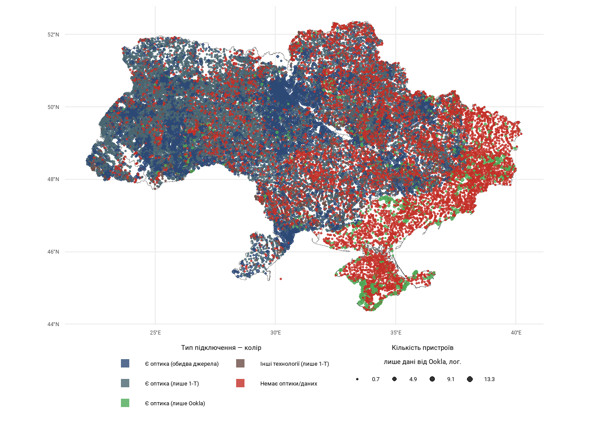

Покриття населених пунктів оптичним інтернетом у 2024 році
Чому оптичний інтернет важливий
У проєкті “Стратегії розвитку сфери електронних комунікацій України на період до 2030”1 розвиток гігабітної інтернет-інфраструктури винесений у дві стратегічні цілі: покриття 75% домогосподарств і проникнення для 99% соціальних закладів (покриття — технічна можливість підключитися, проникнення — фактичне підключення). Оскільки соціальні заклади є майже в кожному населеному пункті, можливість підключитися до гігабітного інтернету до 2030 року має бути доступною практично в кожному селі чи селищі.
Гігабітне підключення здатні сьогодні забезпечити декілька технологій широкосмугового доступу: оптоволоконні мережі (FTTx/xPON), телевізійні кабельні (при найсучаснішому стандарті DOCSIS 4.0), бездротові 5G-мережі і ряд інших, менш поширених.
Хоча кожна технологія має свої випадки застосування, загалом, якщо йдеться про покриття менших населених пунктів надійним і якісним інтернет-доступом, оптоволоконні мережі виграють завдяки довговічності, низькій деградації сигналу на великих відстанях, простішому способу модернізації мережі, енергоефективності тощо.
Джерела даних і підхід до оцінки покриття
Для аналізу покриття населених пунктів оптичним інтернетом використані такі джерела даних:
Регуляторна звітність провайдерів за формою 1-Т, період 2021-2024Q2.
Оскільки під час дії воєнного стану провайдери не зобов’язані подавати звітність, населений пункт вважається із оптичним інтернетом, якщо принаймні за один квартал у цей період провайдери звітували про підключення абонентів за технологією FTTx/xPON.Набір у форматі відкритих даних із результатами тестів швидкості для фіксованого Інтернет від Ookla, період 2019-2024, щоквартальні дані.
Компанія викладає у публічний доступ набір геопросторових даних, що містять інформацію про середню швидкість завантаження та вивантаження (upload), затримку, кількість проведених тестів, кількість пристроїв з яких проводилися тести тощо. Ця інформація дається на кожну плитку, отриману через проєкцію Меркатор із 16-м рівнем наближення — для України розмір такої плитки складає приблизно 400x900 метрів.
Припущення про наявність оптичного інтернету у населеному пункті на основі цих даних зроблено у випадку, якщо швидкість завантаження2 там реєструвалася більше 100 мб/с принаймні раз за період спостережень. Щоб асоціювати плитку з населеним пунктом, точкові координати центру плитки накладені на адміністративні межі населеного пункту.Лінія зіткнення взята в Інституту вивчення війни (ISW), який щоденно оновлює дані і викладає їх публічно. Ця інформація використана, щоб поділити населені пункти на підконтрольні і непідконтрольні (набір Мінреінтеграції так часто не оновлюється). Ці дані взяті станом на 25 січня 2025 року.
Адміністративні кордони різних рівнів взяті з публічного датасету від ДНВП “Картографія”, викладеного Управлінням ООН з координації гуманітарних справ.
Мапа з оцінкою покриття оптичним інтернетом
Станом на кінець 2024 року, на основі описаних джерел та припущень, мапа оптичного Інтернет в Україні виглядає так:
За даними від Oookla, за шість років спостережень швидкість завантаження більше 100 мб/с зареєстрована у 6935 населених пунктах — беручи усю територію України. Розмір кругів на мапі — це кількість пристроїв, з яких робилися тести. Найбільше, майже 26 тисяч пристроїв в середньому на квартал, були у Києві. Оскільки, на противагу, у 61.5% охоплених Ookla населених пунктів є дані з менш як одного пристрою в середньому на рік (для такої швидкості), для відображення пропорцій кругів використана логарифмічна трансформація зі зміщенням, log(x+1).
Оптичний інтернет в підконтрольних населених пунктах
Станом на 25 січня 2025 року, за даними ISW, на підконтрольній Україні території (не рахуючи Курську область РФ), знаходяться 25,804 населені пункти. На основі даних з регуляторної звітності (1-Т) і даних від Ookla, покриття оптичним інтернетом виглядає так:
| Оптичний інтернет у підконтрольних НП | ||
|---|---|---|
| За даними 1-Т та Ookla. У період 2019-2024 | ||
| Статус | Кількість НП | Частка |
| Є оптика (лише 1-Т) | 10,596 | 41.1% |
| Немає оптики/або даних | 7,195 | 27.9% |
| Є оптика (обидва джерела) | 5,662 | 21.9% |
| Є інші технології (1-Т) | 1,931 | 7.5% |
| Є оптика (лише Ookla) | 420 | 1.6% |
| Total | 25,804 | 100.0% |
Об’єднуючи дані від Ookla і від 1-Т разом, ці розрахунки показують, що у 16,678 населених пунктах, або у 64.6% підконтрольних населених пунктах, вже є оптичний інтернет.
Потреба верифікації
Наведені дані покриття оптичним інтернетом — це оцінка. З огляду на описаний підхід, сказати точно, чи покритий населений пункт оптичним інтернетом станом на зараз можна не у кожному випадку:
І на основі даних з 1-Т, і з даних Ookla висновок про присутність оптоволокна у населеному пункті зроблено у випадку, якщо описана умова (звітування про присутність абонентів для 1-Т чи швидкість > 100 мб/с для Ookla) реєструвалася хоча б за один квартал за увесь період спостережень. Станом на кінець 2024 року ситуація з підключенням у населеному пункті могла змінитися.
Швидкість завантаження100 мб/с не обов’язково означає присутність оптики у населеному пункті, особливо якщо за цілий рік така швидкість реєструвалася менш як з одного пристрою у населеному пункті.
З іншого боку, є частина населених пунктів, які фактично мають оптику, але не потрапили на цю мапу через те, що частина провайдерів не звітує про свою присутність, а також через те, що Ookla не є єдиним сервісом з тестування швидкості підключення, яким користуються провайдери. Крім того, обираючи поріг швидкості завантаження для припущення про наявність оптики, слід зважати на те, що:
За даними учасників ринку, технічні можливості провайдерів дозволяють забезпечувати швидкість Інтернету і до 100 Мбіт/с, і до 1 Гбіт/с (завдяки широкому використанню оптоволоконних мереж – 88,1% ліній фіксованого доступу за даними НКЕК), але споживачі обирають пакети з нижчими швидкостями через доступність тарифів3.
Таким чином, цю мапу з оцінкою покриття населених пунктів оптичним інтернетом слід розглядати як орієнтир, що потребує подальшої верифікації.
Footnotes
проєкт Стратегії розвитку сфери електронних комунікацій України на період до 2030 року, презентований у травні 2024.↩︎
можливо краще взяти швидкість вивантаження/upload, оскільки оптоволоконні технології пропонують симетричні швидкості завантаження та вивантаження — на відміну від інших.↩︎
Аналітичні матеріали до проєкту згаданої Стратегії, ст. 47.↩︎